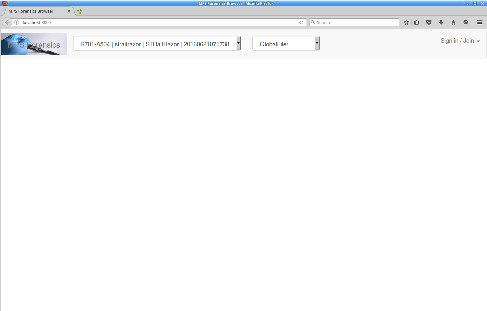

After clicking the "SNP/STR Viewer" button on the home tab of the MPS Forensics application, a Firefox browser window will open to the data viewer - a meteor web service that has been launched by our application on port 3000. If you haven't already created an account and logged in, you should see the following:
You should create an account using the dialog box on the right hand side of the screen. If it doesn't appear to be visible, try expanding your browser window.
You must fill in your email, password, first and last name. You must also accept the terms and conditions
You can see in the image above that there are some text messages with no apparent tick boxes. This graphical glitch can be a real pain, but the tickbox is there, directly to the left of the "I accept the terms and conditions" text. If you get a message saying you must accept these, then click once just to the left of the "I accept" text and click on "CREATE" again.
Now you can log in
There is a simple box at the bottom of each panel view for annotations, so each screen can be saved or printed with a message.